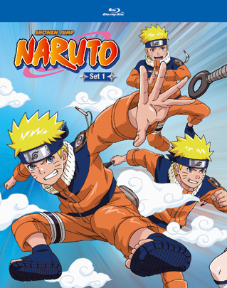

The Legend Comes to Blu-ray!

Remember being a little kid, plopping down in front of the TV, carefully putting your headband on, making sure all your rubber kunai are in your pouch and getting ready to “Believe it”? Most kids probably didn’t go that far, but ninja hand signals were memorized and "Rasengan!" was shouted with gusto at playgrounds around the world.
America, like many other countries caught Naruto Fever when the anime exploded on the scene. And it didn’t take long to transcend the world of otaku and hit the mainstream, something very few anime do. The secret of this show’s rare ability to cross cultural boundaries and demographics and become more popular than anyone imagined lies in its lovable characters, unique and stylish world, incredible storytelling and Sasuke, yeah, he’s just that cool.
Haha, just kidding Sasuke haters!
The show’s success also lies in the strength of its main character, Naruto. His fierce loyalty to his friends, endless determination and unique ability to break through to enemies and show them there’s a better way resonated and inspired millions of fans across the world. And it still does to this day. Many kids felt like him, identified with him and learned from him.
And now it’s time to relive those wonderful memories again, or pass them on to the next generation, because Naruto has finally come to Blu-ray! Naruto, Set 1 includes 27 episodes in English or Japanese, plus an interview with Maile Flanagan the English voice of Naruto!
- Fairy Tails Blog
- Highschool Of Dead Blog
- The best blog : read this
- Naruto Shippuden
- Naruto Movies
- Boruto: Naruto Next Generations
Add Your Comment